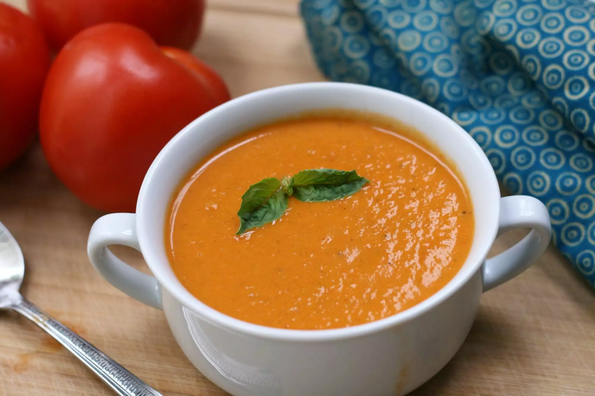

Kentucky Tomato Soup

Description
This creamy tomato soup is delicious and has a twist - the addition of strong, black coffee. This is the perfect
summer dish for using freshly picked tomatoes from the garden. Remember - the better the quality of the
tomatoes, the better the taste of the soup.
Ingredients
- 3 Tablespoons butter
- 1 cup chopped onion
- 1/2 cup chopped carrots
- 2 stalks celery, chopped
- 2 cloves garlic, minced
- 1/4 cup chopped fresh flat-leaf parsley
- 2 1/2 cups chopped fresh tomatoes
- 1 (8 ounce) can tomato sauce
- 3/4 cup strong brewed coffee
- 1/4 cup water
- 1 Teapoons white sugar
- 1 Teaspoons salt
- ground black pepper to taste
- 1/3 cup heavy cream
Steps
- Melt the butter in a stock pot over medium heat. Stir in the onion, carrots,
celery, garlic, and parsley; cook and stir until the onion has softened and turned translucent, about 5
minutes. Add the tomatoes, tomato sauce, coffee, water, sugar, salt, and pepper. Bring the soup to a boil
and simmer for 20 to 25 minutes.
- Pour the hot soup into a blender, filling the pitcher no more than halfway
full. Hold down the lid of the blender with a folded kitchen towel, and carefully start the blender, using a
few quick pulses to get the soup moving before leaving it on to puree. Puree in batches until smooth and
pour into a clean pot. Stir in the cream and heat until warm. Do not boil.